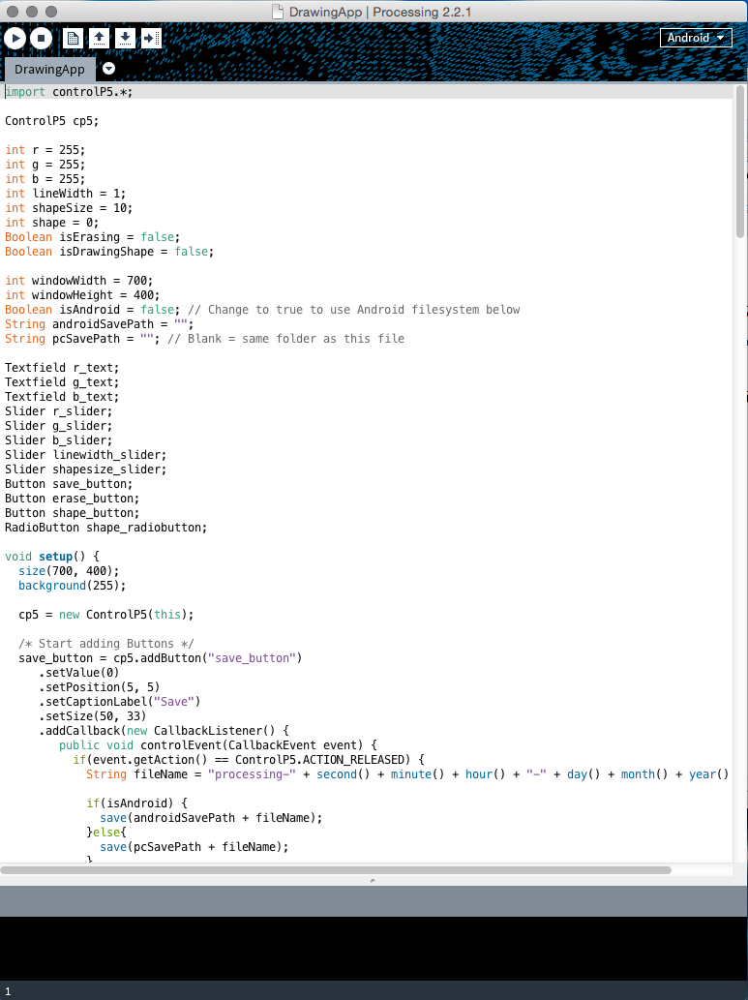
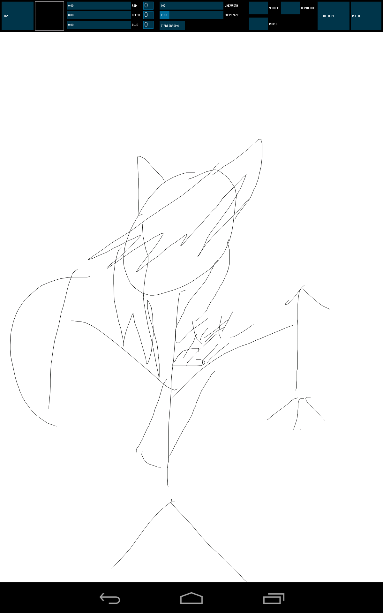

We were tasked with creating a drawing app that incorporated standard features you’d see in a professional application. Each week we were given 2 features that we had to try and add into our application.
To create the application we were advised to use a program called Processing, this was because the program had compatibility with the Nexus 7 tablets we received at the beginning of the course and we could export our application onto the tablet for testing.
Processing had a very Java-esque feel to it, many functions and the way of calling were almost identical, having had experience with Javascript before this made fine tweaking my code much more easier. I used example code from the Processing website as a basis then using my own knowledge played with that code to make it suit my application.
The end application was almost identical to what I had planned a the beginning of the project. All the major features I wanted were fully functioning and looked professional. As you can see in the image below I tried my best to make the application look simplistic yet still including complex functions.
Programming has always been something I have been very fond of and is what I want to do in the future. Learning new languages like Processing and expanding my knowledge on programming is one of the reasons university has been extremely beneficial to me.
Due to members of my group dropping out from the course or being absent I completed this whole project on my own, I believe this reflects on my skills to program and plan independently and also my work ethic. The project was supposed to be completed in groups of 4, but instead I myself tried my best to mange my time to complete all the tasks given to me and produced in my opinion a very sleek and professional application.